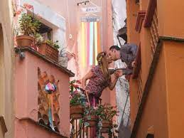

En la ciudad de Guanajuato hay un misterioso callejón al que todos los visitantes del lugar quieren acudir.
Existe una leyenda en torno a este lugar, transmitida de generación en generación, que lo convierte en un sitio emblemático.
Quienes acuden allí suelen ir acompañados de sus parejas para fotografiarse y besarse en el tercer escalón del callejón.
Con esta tradición, los enamorados pretenden asegurar su felicidad unos cuantos años.
Es un lugar que, gracias a la leyenda, se ha convertido en todo un símbolo del amor.
Cuenta la leyenda que Carmen era una joven hermosa y cariñosa que vivía con su intransigente padre.
Carlos era un apuesto galán humilde dedicado a cumplir con su trabajo.

Un día, por casualidad, Carmen y Carlos se conocieron y entre ellos surgió un lazo indestructible.
Desde entonces, el joven se situaba bajo el balcón de la casa de Ana, quien le respondía siempre con una sonrisa.
Así pasaron semanas hasta que, más tarde, iniciaron una conversación
Pasó el tiempo y los jóvenes planeaban un futuro juntos. Cuando menos lo esperaban, el padre de la joven se enteró de sus encuentros.
Entonces, amenazó a su hija con recluirse en un convento.
A pesar de esto, Carmen y Carlos decidieron continuar con la relación en secreto.
Carlos alquiló una habitación situada frente a la casa de su amada, donde podría hablar con ella de balcón a balcón.
Un día, el padre de la joven les pilló besándose desde el balcón y, lleno de furia, clavó una daga a su hija y le quitó la vida.
Desde entonces se conoce este lugar como Callejón del Beso.